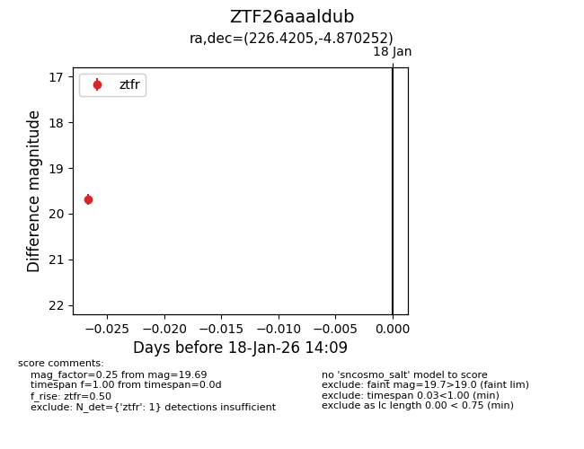
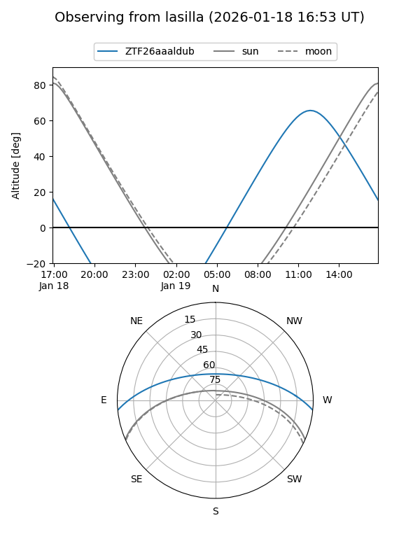
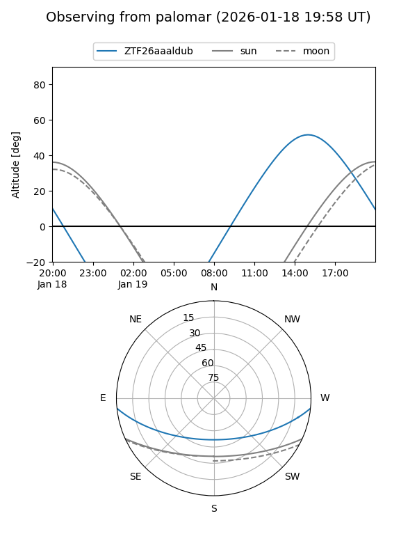

ZTF26aaaldub
Target ZTF26aaaldub at 2026-01-18 14:10
Aliases and brokers:
FINK: link
Lasair: link
ALeRCE: link
alt names
ZTF26aaaldub (ztf,fink_ztf)
Coordinates:
equatorial (ra, dec) = 226.4205,-4.87025
equatorial (HMS+DMS) = 15:05:40.91,-04:52:12.91
galactic (l, b) = (353.4263,+44.44584)
Flags:
Photometry:
last ztfr=19.69
1 ztfr detections
Lightcurve

Visibility


Additional plots